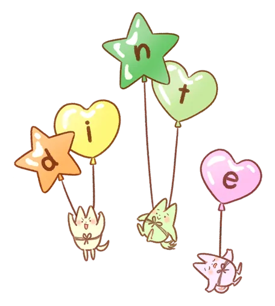

Smile Coordinate
人はいつからでも変われる。
自分を知り、生まれ変わる。
「変わりたい」その気持ちを、大切に。
締め付けられるような、胸の苦しみから解放され、 無理をしない、「らしさ」を手にする。
私たちについて
私たちSmile Coordinate（すまいるこーでぃねーと）は、 「人はいつからでも変われる」 そんな想いを込めて、 あなたの人生にそっと寄り添いながらサポートしています。
変化に必要なのはたった2つ。
それは、
「自分が本当に望んでいるものに気づくこと」
と
「その想いに向かって、ちょっとずつでも動いてみること」
です。
私たちは、
ただ気づきを与えるだけじゃなく、
あなたが自分で考えて動けるようになるまで、一緒に並んで歩いていきます。
変わりたいけど、なんだか不安…
自分の気持ちがよく分からない…
そんな風に感じているときも、まずは自分の本音を見つめるだけでも心が少し軽くなります。
人生は、自分の選んだ道を歩くもの。
でも、余計な考えや感情にとらわれていると、なかなか進みにくいですよね。
なので私たちは、
いらない思考、過剰な感情、他人からもらったモヤモヤ――
そういったものを手放すヒントも、一緒に見つけていきます。
あなたが自分らしく、軽やかに生きるために。
その一歩を、一緒に踏み出してみませんか？
自己紹介
すまいるこーち
小山 春子
（おやま はるこ）
私は、
「人はいつからでも変われる」
ことを信じています。
これまで数多くの方とセッションを行い、徐々に変化していく姿を目の当たりにしてきました。
人が変わっていく姿を見るたびに、私の心も喜びと幸せで満たされます。
セッションを重ねることで、脳の力がゆるみ、考え方や物の捉え方が少しずつ柔軟になっていきます。
私は、そんな
「変化のきっかけ」
をつくるお手伝いをしています。
新しい視点や考え方、そして心の奥に眠る想いや力を引き出すサポートをしています。
4人の息子の母としての子育て経験や、これまでの人生で感じてきたこと・考えてきたことを通して、
誰かの力になりたいと思い活動をしています。
特に、
子育ての悩みや不安を軽くする「きっかけ」を届けたい
と思っています。
私たちが大切にしているのは、人の目を気にせず
“自分らしく”
生きること。
そして、こどもたちのエネルギーを自由に発揮できるような、そんな未来をつくっていきたいと願っています。
また、ひとりひとりが
「こころが輝くような生き方」
を見つけられるようなお手伝いができればと思います。
できること
- 子育てや発達に関するご相談
- こどもの教育・進路についてのアドバイス
- あなたの「思考のクセ」を知る
- モヤモヤや悩みの整理・解消
- 「あなたらしさ」「自分」を見つける
- 将来の夢や目標を一緒に見つける
- あなたの強みや特技を引き出す
- 新しい「視点（考え方）」を届ける
- 一歩踏み出す「勇気」を引き出す
- 思考を柔軟にしていくサポート
デザイン、事務担当
小山瑞樹
（おやま みずき）
事業サポート、制作などを担当しています。 僕は、できることが増えると楽しくて喜びを感じたので、分からないことは調べてレベルアップをしている時期がありました。
少し前に、デザインを教える機会があり、デザイン講師をしていました。
今では、何でもすることをやめて、自分にしかできないことをしています。
また、誇りを持てる会社を増やしたい想いで、事業を良くしていくサポートをしています。
一緒に事業の悩みや課題を解決しながら成長していきたいと思います。
できること
- 事業の土台固めや作業の優先順位の決め方などのアドバイス
- 会社のブランディングやマーケティングのサポート
- UIを意識したWebサイトの制作、Art作品の制作、など
提供しているもの
届けたい、伝えたいこと
「今を変えたい」
「もっと自分らしく生きていきたい」
そんな願いを受けとめ、マインドリフレーミングを提供しています。
「コーチング」や「カウンセリング」などを掛け合わせ、誰もが無意識に作り出している ”思考の枠” を手放して
あなたの人生を寄り良い方向へ変えていくことをていします。
STEP 1｜自己理解 無意識の枠に気づく
普段の思考・感情・行動のパターンを観察し、 その奥にある「当たり前」や「思い込み」に気づいていきます。STEP 2｜視点の転換 リフレームする
見つけた思い込みを、柔らかくゆるめていきながら、 もっと自由であたたかい視点や捉え方を育てます。STEP 3｜行動と定着 再構築する
気づきをベースに、小さな行動を日常に落とし込みながら、 自然な形で意識と行動の変化を定着させていきます。心に寄り添う、３つのステップ
Step 1｜自分を知る
〜 内なる自分と出会う 〜
思考、感情、価値観。
あなたの中にあるたくさんの宝物に、そっと目を向けていきます。
「自分を知ること」は、すべての始まり。
誰かの評価ではなく、あなた自身の声に耳を傾けていきましょう。
Step 2｜未来を描く
〜 本当の望みに気づく 〜
今まで気づかなかった、心の奥にある「本当の願い」。
それに静かに、でもしっかりと触れていきます。
あなたが心から「こうありたい」と思える未来に、意識を向けていきましょう。
Step 3｜一歩踏み出す
〜 意識を現実に変える 〜
内側で芽生えた想いを、外側の世界へと結びつけていくステップです。
小さな行動を重ねながら、
世界の見え方が、少しずつ優しく変わっていくお手伝いをします。
この３つのステップを通して、 思考・心・魂のバランスをやさしく整えながら、 あなたらしく歩む未来を、そっと応援していきます。

不安や悩みの共有
あなたの不安や悩み、聞かせてください
Smile Coordinateでは、
「みんな同じだよ」という言葉ではなく、
あなた自身が抱えている想いに寄り添いたいと思っています。
今を変えたいと願うあなたに、
少しでも「変われるキッカケ」をお届けできたらうれしいです。
今感じている不安やモヤモヤ、
小さなことでも大丈夫なので、ぜひ共有してください。
言葉にするだけでも、
「自分は今、こんなことで悩んでいたんだ」って気づけることがたくさんあります。
もし、共有してみて
「もう少し話してみたいな」と思ったら、
ぜひ無料相談にもご参加ください😊
あなたの今の気持ちに合わせて、少しでも心が軽くなるお手伝いができたらと思っています✨
あなたのペースで大丈夫。
「こんなこと話していいのかな？」と思わずに、
リラックスして気持ちを聞かせてもらえたらうれしいです。
-
※無料相談について
通常の無料相談：30分 -
※さらに、共有してくださった方限定！
毎月先着3名様には、1時間の無料セッションをご案内しています。（お一人1回限り）
お問い合わせ
お申し込み以外にも、
「ちょっと相談したいな」
「気になることを聞いてみたい」
そんなときは、どうぞお気軽にコンタクトフォームからご連絡ください♪
小さなことでも大丈夫ですので、
気軽な気持ちでメッセージしていただけたら嬉しいです✨
【ご注意いただきたいこと】
※お問い合わせいただいた内容は、大切に保管し、1カ月間安全に管理いたします。
※ご連絡用のアドレスは、必ず受信できるメールアドレスをご入力ください。
プライバシーポリシー
当サイトはSmile Coordinate（以下、当社と記載）が提供しています。 当社では、お客様のプライバシーを尊重し、安心してサービスをお受けいただくために、 以下の通り個人情報の保護に関する法律およびその他の法令を遵守し、個人情報の保護に努めます。
- ・お客様から当社へいただいたお問い合わせに関するご連絡のため
- ・各種サービスのお申し込み・ご請求・お支払いなどの確認のため
- ・各種サービスで使用するためにお客様にお渡しする教材や資料の作成のため
- ・各種サービスで使用する教材や資料などの送付のため
- ・当社の商品・サービスに関するアンケート調査のため
- ・お客様の同意がある場合
- ・お客様が希望されるサービスを行なうために当社が業務を委託する業者に対して開示する場合
- ・法令に基づき開示することが必要である場合
1,個人情報の取得・利用について
当社では、以下の目的のため、お客様からお知らせいただいた氏名、住所、 電話番号、メールアドレスなどの情報を利用させていただきます。
2,個人情報の管理について
当社は、個人情報の正確性を保ち、また、個人情報の紛失、破壊、改ざん及び漏えいを防止するため、 不正アクセスに対する適正な情報セキュリティ対策などの必要な対策を講じ、これを安全に管理いたします。
3,第三者への提供について
当社は、お客様よりお預かりした個人情報を適切に管理し、次のいずれかに該当する場合を除き、 個人情報を第三者に開示いたしません。
4,個人情報の開示・訂正・削除について
個人情報をお知らせいただきましたお客様は、いつでも当社に対して、当社が有している
ご本人の個人情報をご本人のみに開示するよう求めることができます。
開示の結果、当該個人情報に誤りがある場合は、当社に対して当該個人情報の訂正または削除を
要求することができます。
当社では、お客様からの要求に従い適切な措置を速やかに行います。
その他、お客様のプライバシー保護に関して疑問・質問・ご要望などございましたら、
お問い合わせフォームよりいつでもご連絡ください。誠意をもって対応することをお約束いたします。
よくある質問
Smile Coordinateは何をしているの？
私たちSmile Coordinateは、
「人はいつからでも変われる」
そんな想いを込めて、あなたの人生にそっと寄り添いながらサポートしています。
「変わりたい」「自分らしい人生を歩みたい」と思っている方に向けて、
マインドリフレーミングを通して、無意識に作られた枠を手放して、
思考や心のあり方を変えるお手伝いをしています。
初回は無料で受けられますか？
はい、無料相談を初回としてご案内しています！
基本は30分ですが、
事前に「お悩みの共有や講座、セミナー」などにご参加をしてくださった方は、
毎月先着3名様限定
で、
約1時間
の無料セッションを受けていただけます。
どんな人におすすめですか？
こんな想いがある方におすすめです！
・能力の向上をしたい方
・今の状況を変えたい、前に進みたいと感じている方
・目標に向かって、具体的な行動プランを立てたい方
・人間関係やキャリア、ライフスタイルに変化を求めている方
・自己理解を深めたい、新しい視点を取り入れたいと考えている方
上記は参考なので、その他にもお悩みがある方におすすめしています。
コーチングとカウンセリングの違いは何ですか？
それぞれサポートの内容が少し違います。
コーチング
→ 目標を設定して、具体的な行動計画を立て、前向きな変化をサポートします。
カウンセリング（お悩み相談）
→ 今感じている不安や心のモヤモヤに寄り添いながら、自己理解を深めるための対話を行います。
ご希望やお悩みに合わせて、どちらが今のあなたに合っているか一緒に考えていきます♪
効果はどのくらいで感じられますか？
人それぞれですが、
嬉しいことに「1カ月以内に変化を感じた」というお声をよくいただいています！
ただ、心の奥深い部分に向き合う場合は、
どうしても時間がかかることもあります。
内面的に変化をしたい方には、長期プランもおすすめしています。
実際のご感想もまとめていますので、よろしければ参考にしてみてくださいね！
申し込みはどこからできますか？
お申し込みは、こちらからどうぞ！
・コンタクトフォーム
・公式LINE
お申し込み内容を確認次第、
こちらから折り返しご連絡して、無料相談の日程を決めさせていただきます✨
※体調不良や急なご予定が入った場合は、できるだけ早めにご連絡ください。
日程変更ももちろん可能です！
※質問やご不安なことがあれば、お申し込み前でも遠慮なくご相談ください。
支払い方法は何に対応していますか？
・現金振り込み
・クレジット決済
どちらにも対応しています！
お申し込み後にご希望のお支払い方法をお伺いします。
※価格はすべて税込みです。
※銀行振込の場合は、手数料のご負担をお願いしています。
予約日時の変更はいつまでにするといいですか？
急な体調不良やご都合が悪くなった場合は、
できるだけ早めにSmile Coordinateまでご連絡ください！
前日12時までにご連絡いただければ、日時変更可能です。
ご連絡なく予約時間を10分過ぎた場合は、自動キャンセル扱いとなりますのでご注意ください。
無理せず、体調やご事情を優先してくださいね♪
はい、ご安心ください！
お客様の個人情報や、セッションでお話しいただいた内容は、
第三者に漏れることがないよう、記録しない形を取り、万全を期しています。
皆さんが安心して利用できる場づくりを、これからも大切にしていきます🌱
メールなどのメッセージ対応は基本11時～17時になります。
セッションについては、10時から20時を目安としていますが、
21時から受けるお客さまもいらっしゃいますので、ご希望の時間帯をお伝えください。
みなさまのご感想
感じた変化や気づきは、人それぞれ。
だけど、どの感想にも
「ちゃんと自分と向き合えたこと」や
「少しずつでも前に進めた実感」が詰まっています✨
迷っている方には、きっとヒントになると思います。
ぜひ、みなさんのリアルな声に目を通してみてくださいね♪
-
Uさん
コーチングを受ける前は、何かをやりたくても何をどうしたらいいのか分からない（自分の知りたいことや分からないことが何なのかが分からない状態）でした。
ですが、自分の思考の癖や特徴を知れたことで、これまで分からなかった事や知りたかった事を自分で明確に出来るようになり、少しずつ自分から行動できるようになってきていると思います。 それから、これまでやらなくていいことを無意識にしていたのですが、自分で判断してやらなくていいと思った事をしなくなり時間に余裕ができて、やりたいことに時間を作れるようになりました！ -
Mさん
無料相談の短時間でも気づくことが多く、不思議な感覚でした。
ただ話しているだけなのですが、自然と自分の悩みや解決策を知れるのでとても良い時間でした。 -
Sさん
これまでコーチングを受けたことがなく、何をするのか不安でしたが、本当にただ話すだけでした。
もやもやが消えて悩んでいたことが明確になって、頭がスッキリしました。 たったの2時間で自分のことがこんなに知れたので、とても驚いています。 -
Tさん
私は、何も悩みや困っていることはないと思っていたのですが、コーチングを受けたら自分には何んでいることや困っている事、不安に思っていることなどがあったことに気づきました。
解消するために継続的に受けたいと思います。 -
Aさん
以前他の無料相談を受けたのですが、気づくことや腑に落ちたことがありませんでした。
ですが、ここの無料相談では気づきや腑に落ちることがありました。
何となくうやむやになっる事はないと思いました。